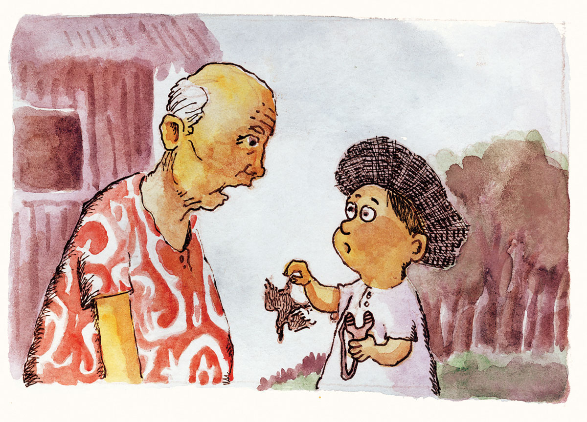
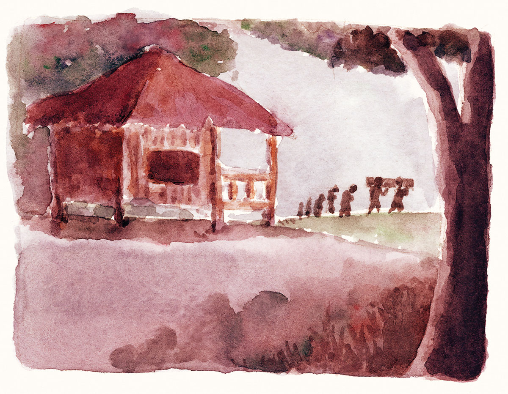

Ang Kahoy nga Bolbolan
Ang barangay Guiwang sa lungsod sa Alcoy, mapagarbuhon sa iyang nindot nga baybayon, puting bas ug tin-aw nga dagat. Sa panahon sa bakasyon ug sa ting-init maayo kining tugsawan.
Ang habog niyang bungtod kanunay namaypay og lab-as nga hangin adlaw ug gabii, kay gilibutan kini og mga kahoy ug mga tanom nga maoy sarang nilang kabuhian sa lumolupyong Guiwangnon.
Sa habog nga bungtod malantaw ang pulo sa Bohol ug ang halapad nga kadagatan. Niining bungtora nanag-ambo ang mga kahoy nga bolbolan. Nanuyhakaw ang tag-as niyang punoan. Ang iyang kalayog molabaw pa gani sa lubi. Nahimo kining sibaanan sa mga langgam panahon sa tinghinog sa iyang mga bunga.
Nainila usab kining kahuya nga maayong gam-on og kasko sa sakayan. Kining kasko maoy lawas o dugokan sa sakayan.
Si Undo Karlo nga katorse anyos, hilig sa panirador og mga langgam. Gani duha may iyang tirador agi og panagana og mobana ang goma sa usa, aduna pay iyang reserba.
Sayo sa buntag nianang adlawng Sabado, ang mga gansiyang saba kaayong naniba sa hinog nga mga bunga sa bolbolan. Nikulikot sa dawunggan ni Undo Karlo ang kabanha ug alingisig nga tingog sa mga langgam. Wa niya usiki og panahon, iyang gikuwentas sa iyang liog ang usa niya ka tirador. Samtang ang laing usa iyang gitauran og bala nga bato. Ang bulsa sa lusgawon niyang purol napuno sa mga bato.
Sa iyang paghangad sa kahoy nga bolbolan nakita niyang nag-itom ang mga gansiyang sa ilang gibatugan. Labihan niyang lipaya nga nagtan-aw. Gibingat ni Undo Karlo ang iyang tirador ug unya gibuhian patumong sa nagpundok nga mga langgam. Apan way naigo. Ang kasikas nga nahimo sa iyang bala nakapaalibwag sa mga langgam apan namatog ra usab silag balik. Gitirahan ni Undo Karlo ang laing pundok. May nagpiliik nga misukarap sa yuta.
Taudtaod nanibat ang mga langgam sa pagpunay og tira ni Undo Karlo. Nakapahiyom si Undo Karlo nga nipauli bitbit ang tulo ka gansiyang nga iyang kuha.
“Liwat ka gyud sa imong Lolo Medong, Undo, “ matod ni Lola niya Nena sa iyang pag-abot. “Hingigo si Lolo nimo sa batan-on pa!”
“Unsang langgama ang imong nakuha, Undo?” Pangutana ni Lolo Medong sa iyang apo.
“Kuan, Lo, gansiyang!”
“Diin ka man nanirador?” Dayong gawas ni Lolo Medong.
“Diha sa kahoy nga bolbolan.”
“Uy, Undo,” ni Lolo Medong nga mahingawaon. “Delikado baya nang kahuya!”
“Kay ngano diay, Lo? Taw-an ang bolbolan?”
“Wa ko masayod og taw-an ba kanang kahuya. Apan adunay estorya niana kaniadto ug hangtod karon nagpabilin kining kasugiran dinhi sa ato.”
“Estoryahi hinuon ko, Lo… Sige na, Lo!” hangyo sa batan-ong apo.
Gipunit ni Medong ang bangketo ug iya kining gilingkuran.
“Kaniadto kuno, may usa ka pamilya nga nagtukod og bay nga ilang kapuy-an. Ang kahoy nga ilang gigamit gikan sa haligi, pingga, paruos, busaog, bungbong, sawog, marko ug uban pang mga dapat naggikan sa kahoy nga bolbolan. Ila kadto gipagabas sa kaila nilang gabasero.
“Tuod man, nahuman gayud ang bay sulod lamang sa usa ka bulan nga wa magsuhol og panday. Nagtambayayong sa pagbuhat ang magtiayong Floro Huerte ug Irenea Anoba uban ni Francisco nga ilang anak. Apan pipila lamang ka bulan sa ilang pagpuyo nasakit si Francisco ug wa magdugay kini namatay.
“Sa baryo, ang mamatay ilubong dayon pagkaugma aron di mabaho. Ug maoy naandan nga magbuhat og lungon ang tagtungod. Kay nihit silag kuwarta nga ipalit og kahoy, maoy nahunahunaan sa magtiayong Floro ug Irenea nga maglangkat og sawog sa ilang bay. Pito ka pirasong tabla ang ilang gilangkat. Kadali ra nahuman ang lungon sa tabang sa ilang mga paryente ug mga silingan.
“Apan wa usab magdugay si Irenea ang misunod sa pagkamatay. Naglangkat na usab silag sawog aron gam-on nga lungon. Si Floro nga biyudo nagminyo og laing babaye. Apan nagsunod silag kamatay. Nahurot gayud silang pamilya og kamatay ug nahurot usab ang sawog sa ilang bay. Ug sa manok pa, ‘gihimulbolan’ silang tibuok pamilya. Ug sa gantangan, ‘gikalis’ silang tanan.
“Gikan niadto talagsang mogamit sa bolbolan alang sa bay ug sa kasko sa sakayan. Mapanagan-on ug mahadlukon silang tanan.”
“Lolo Medong,” ni Undo Karlo nga nahimuot sa asoy sa iyang apuhan. “Nindota nimong moestorya, Lo, uy! Apan nganong nahurot man silag kamatay, Lo?”
Niigham ug nipahiyom si Lolo Medong. “Di tingali maayong magtukod og bay nga pulos kahoy nga bolbolan aron di sab himulbolan!”
“Sa akong sabot, Medong,” misalga si Lola Nena, “di kadto sa kahoy gyud kundi nanungo hinuon sila kay ang ilang sawog mao ra say gihimong lungon nga unta sawog man kadto nga ilang higdaanan!”
“Nena,” sumpo ni Lolo Medong, “kining ato pulos mga panaghap nga way kaseguroan. Hangtod karon nagpabilin kining tanghaga.”
“Unya, kinsa na may nagpuyo adtong baya, Lo?”
“Wa. Gipasagdan nga magabok ug matun-as.”
“Sukad karon, di na diay ko manirador sa kahoy nga bolbolan, Lo, uy! Kuyaw diay nang kahuya!”